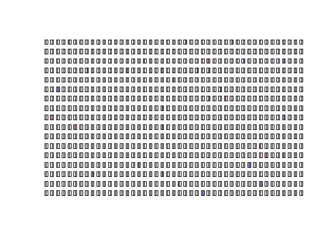

The plot_panel function takes objects of the class
adpcr to enable customizable graphical representations
of a chamber-based digital PCR experiments (e.g., Digital Array (R) IFCs
(integrated fluidic circuits) of the BioMark (R) and EP1 (R)).
plot_panel(input, col = "red", legend = TRUE, half = "none", plot = TRUE, ...)
adpcr class.TRUE, a built-in legend is added to the plot.left or right, every well is represented only
by the adequate half of the rectangle."logical", if FALSE, only plot data is returned
invisibly.plot function.Invisibly returns two sets of coordinates of each microfluidic well
as per calc_coordinates:
coords is a list of coordinates suitable for usage with functions from
graphics package. The second element is a data frame of coordinates
useful for users utilizing ggplot2 package.
Currently, only objects containing tnp data can be plotted as
a whole. For the any other type of the adpcr data, only just one column
of data (one panel) can be plotted at the same time (see Examples how easily
plot multipanel objects). Moreover the object must contain fluorescence
intensities or exact number of molecules or
the positive hits derived from the Cq values for each well. The Cq values
can be obtained by custom made functions (see example in
dpcr_density)) or the yet to implement "qpcr_analyser function
from the dpcR package.
If the col argument has length one, a color is assigned for each
interval of the input, with the brightest colors for the lowest values.
extract_run - extract experiments.
adpcr2panel - convert adpcr object to arrays.
# Create a sample dPCR experiment with 765 elements (~> virtual compartments) # of target molecule copies per compartment as integer numbers (0,1,2) ttest <- sim_adpcr(m = 400, n = 765, times = 20, pos_sums = FALSE, n_panels = 1) # Plot the dPCR experiment results with default settings plot_panel(ttest)# Apply a two color code for number of copies per compartment plot_panel(ttest, col = c("blue", "red"))#>#>par(mfcol = c(2, 2)) four_panels <- lapply(1:ncol(ttest2), function(i) plot_panel(extract_run(ttest2, i), legend = FALSE, main = paste("Panel", LETTERS[i], sep = " ")))par(mfcol = c(1, 1)) # two different channels plot_panel(extract_run(ttest2, 1), legend = FALSE, half = "left")# plot two panels with every well as only the half of the rectangle ttest3 <- sim_adpcr(m = 400, n = 765, times = 40, pos_sums = FALSE, n_panels = 2)#>#>par(mfcol = c(1, 2)) two_panels <- lapply(1:ncol(ttest3), function(i) plot_panel(extract_run(ttest3, i), legend = FALSE, main = paste("Panel", LETTERS[i], sep = " ")))par(mfcol = c(1, 1))